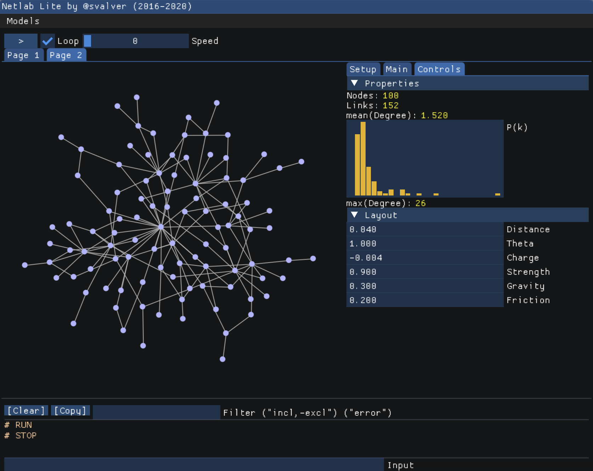

Teaching

Teaching is a much-need component of scientific research. Sergi Valverde was teaching at the Degree of Biomedical Engineering (22106, 22107, 22117, 22123) and the Degree in Human Biology (20332) focuses in complex systems (Netlogo) , computational simulation (Matlab/Octave) and evolutionary algorithms (2008-2020). Our students learned how to solve engineering problems by programming computers by imitating the process of natural evolution. This is particularly relevant for both practical and theoretical reasons. First, evolutionary algorithms are highly cost-efficient when optimising complex systems with a very large number of degrees of freedom. Second, students learn how to approach reality from the evolutionary perspective. Finally, there are many bioengineering applications for evolutionary algorithms, e.g., parameter optimisation in biological circuits.
NETLAB WEB (2020)

Click here to access Netlab Lite, a network programmable modeling environment. This is a compact, on-line version of the Netlab platform that I have developed over the years. Netlab allows students to program their own network models and perform common analyses, only using their web brower (requires WebGL, Chrome and/or Firefox is recommended).Complex Networks

Materials for our "Introduction to Complex Networks" course at the Universitat de Valencia available here.
Complex Systems
Materials for the Summer Course 2017
Evolutionary Algorithms by Sergi Valverde (Degree of Biomedical Engineering)